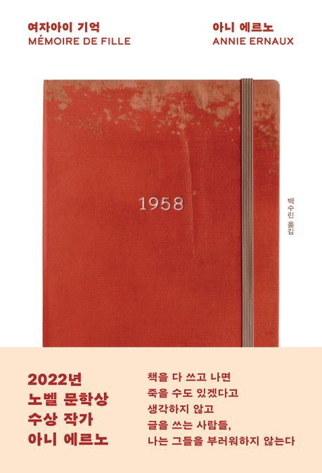

추천도서
부키만의 차별화된 AI추천 서비스가 당신의 취향에
딱 맞는 책을 엄선하여 골라드립니다.
추천도서
부키만의 차별화된 AI추천 서비스가 당신의 취향에
딱 맞는 책을 엄선하여 골라드립니다.
“여자아이 기억”
아니 에르노 저자(글) ㅣ 백수린 번역
2022년 노벨상 수상 작가 아니 에르노의 2016년 작품, 『여자아이 기억』이 소설가 백수린의 번역으로 출간되었다. 자신의 삶을 이용해 보편적인 이야기로 만든다고 강조해온 작가의 작품 세계 속에서도 ‘기억 속 사건’으로만 남아 있던, 마지막 한 조각 퍼즐을 담았다. 1958년, 열여덟 살의 나이로 겪은 남성과의 첫 경험은 아니 에르노에게 오랜 세월 써야만 했고 쓸 수 없었던 미완의 프로젝트였다.
무려 60년 가까이 흐른 2016년, 20년 동안 수차례 펜을 꺾고 다시 쥔 끝에 출간된 『여자아이 기억』은 “이 책을 쓰기 전에는 죽을 수 없다”는 결연한 의지와 책임감으로 완성한 아니 에르노의 새로운 대표작이다.
인생의 한 시기에, 사랑을 알고 싶고 세상을 탐험하고 싶어했던 여자아이에게 쏟아진 수치심과 모멸, 그리고 그날의 사건이 가져온 파장들. 대상이 되어버린 삶의 주체성을 다시 회복하기까지의 지난한 분투. 글쓰기를 통해 잔혹한 사건을 해체하고 그 본질을 추적하고 분석하는 집요함과 대범함.
『여자아이 기억』을 읽으며 우리는 개인의 기억을 끊임없이 탐구해온 아니 에르노가 노벨문학상을 수상할 수밖에 없는 이유를, 그 정당성을 확인할 수 있다. 그 기억은 개인의 기억이자 책을 읽는 독자의 기억이 되며 우리의 상처를 환기한다. 한번쯤 1958년의 그 여자아이였던 우리는 책을 읽으며 과거의 그날을 들여다보고 그 시절 우리의 모습을 마침내 어렴풋하게나마 이해하게 된다.